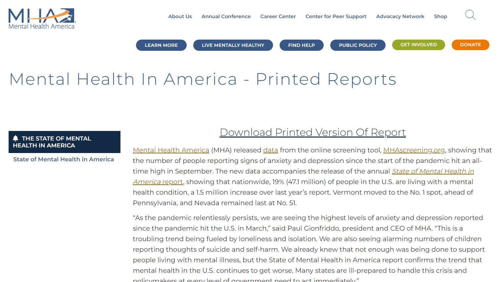
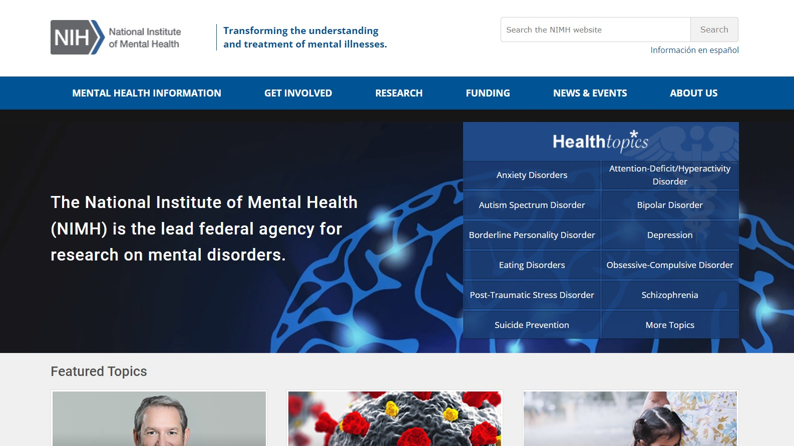
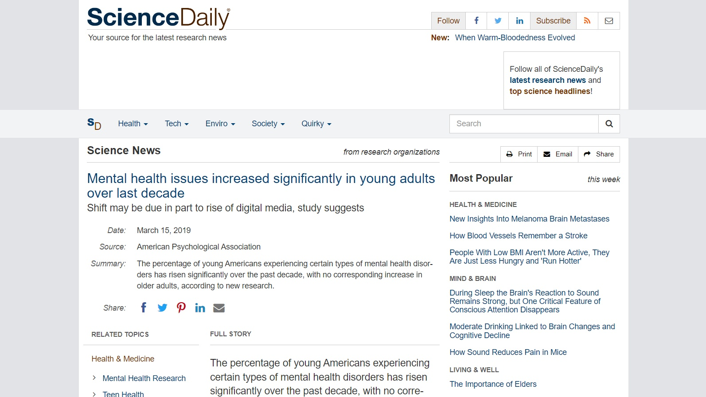
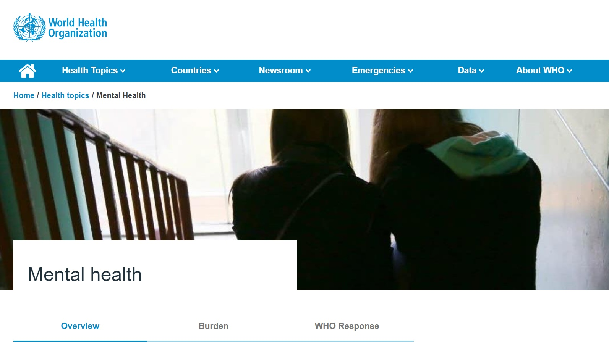

Mental Health America (MHA)
"Mental Health America (MHA) released data from the online screening tool, MHAscreening.org, showing that the number of people reporting signs of anxiety and depression since the start of the pandemic hit an all-time high in September."

National Institute of Mental Health (NIMH)
"The National Institute of Mental Health (NIMH) is the lead federal agency for research on mental disorders. NIMH is one of the 27 Institutes and Centers that make up the National Institutes of Health (NIH), the largest biomedical research agency in the world. NIH is part of the U.S. Department of Health and Human Services (HHS)."

ScienceDaily
"The percentage of young Americans experiencing certain types of mental health disorders has risen significantly over the past decade, with no corresponding increase in older adults, according to research published by the American Psychological Association."

World Health Organization (WHO)
"WHO works with Member States and partners to improve the mental health of individuals and society at large. This includes the promotion of mental well-being, the prevention of mental disorders, and efforts to increase access to quality mental health care that respects people’s human rights."

Mental Health Videos
AnthonyPadilla
"Anthony Padilla has spent the last two years making episodes where he interviews people he’s personally interested in learning about. His genuine curiosity and empathetic approach to the subjects he covers results in a positive feedback environment. Padilla says that he frames his content knowing his audience appreciates his emotional connection to his guests—and in our current moment, this type of interviewing provides a respite for the overwhelmed."
VIDEO
Cinema Therapy
"Cinema Therapy was started in 2020 when two friends, a licensed therapist and a professional filmmaker, teamed up to share mental health and relationship skills while geeking out about movies. Licensed therapist Jonathan Decker and professional filmmaker Alan Seawright break down your favorite movies, searching the characters, themes and plots to find things you can use to improve your mental health."
VIDEO
HealthyGamerGG
"Dr. K. is an American psychiatrist and co-founder of the mental health coaching company, Healthy Gamer. He streams interviews on Twitch, where he and participants discuss mental health topics. Healthy Gamer is an online community and resource platform for gamers and their families. It is a platform designed to help gamers with their mental health through coaching, community, and content."
VIDEO
How to ADHD
"How to ADHD mostly posts videos with tips, tricks and insights into the ADHD brain. How to ADHD helps build a toolbox of techniques for tracking ADHD and features strategies Jessica McCabe has learned about having and living with ADHD. Their goal is to teach viewers to learn to work with one's brain, not against it. This channel is beneficial for anyone looking to learn more about ADHD."
VIDEO
Kati Morton
"With over 15 years of clinical expertise, Kati unpacks the complex world of mental health through conversations and educational tools that help millions of people drive meaningful change. Kati Morton is a licensed marriage and family therapist who makes videos about mental health to help educate and empower people."
VIDEO
Kurzgesagt – In a Nutshell
"Kurzgesagt is a team of illustrators, animators, number crunchers and one dog who aim to spark curiosity about science and the world they live in. The studio's YouTube channel focuses on minimalist animated educational content, using the flat and 3D design style. They discuss about scientific, technological, political, philosophical and psychological subjects. To them nothing is boring if you tell a good story."
VIDEO
Psych2Go
"Psych2Go aims to create a more connected world through animated content that inspires, educates and entertains around topics like mental wellness, relationships, and self care. They believe that raising mental health awareness, educating people about themselves through psychology, will be the first step towards personal change and growth. Psych2Go offers video content and a community of people who are willing to help by encouraging comments on videos and posts."
VIDEO
TEDx Talks
"TEDx Talks is an international community that organizes TED-style events anywhere and everywhere - celebrating locally-driven ideas and elevating them to a global stage. TEDx Talks are TED-like events that are organized by volunteers around the world. TEDx events are produced independently of TED conferences, each event curates speakers on their own, but based on TED's format and rules."
VIDEO
The Psych Show
"The Psych Show is founded by Dr. Ali Mattu, a clinical psychologist. He makes videos about mental health and psychology, including mental health tutorials, reactions to pop culture, product reviews, and psychology career advice. Mattu wishes to help others use psychology to improve their life and get a fresh perspective on the world. He aims to make psychology and mental health videos fun to watch, easy to understand, and free to everyone."
VIDEO